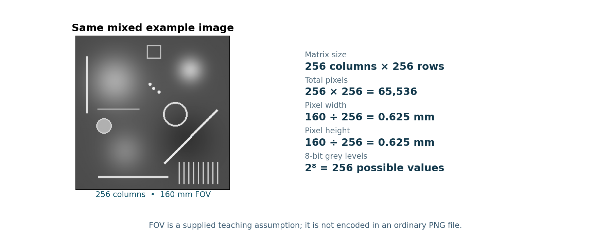
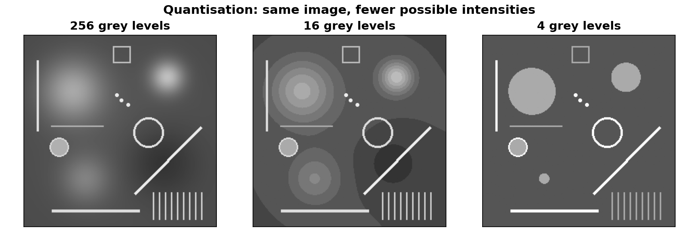

← Tutorial hub · 1D Fourier Lab · Pixel & Quantisation Lab
60-minute practical Three parts: waves (20 min), image pixels and quantisation (19 min), and ImageJ FFT filtering (18 min); finish with a 3-minute recap.
Part A · 1D waves and spectra (20 minutes)
- Under Wave basics, set amplitude = 1, harmonic = 1 and phase = 0°. Compare harmonics 1 and 4 while changing only the harmonic number.
- Under Addition & phase, choose equal amplitudes and the same harmonic for both waves. Try relative phase shifts of 0°, 90° and 180°.
- Under Harmonics & spectrum, set only harmonics 1 and 3 to non-zero amplitudes. Compare the waveform with the bar-chart spectrum.
A1. What changes when harmonic number increases? What changes when only amplitude increases?
A2. Why do equal-amplitude, same-frequency waves cancel at a 180° phase difference?
A3. Which graph identifies the frequencies present, and what does each bar mean?
Part B · One image: pixel size, matrix and grey levels (19 minutes)

Use this same 8-bit, 256 × 256 image for all image-based tasks in Tutorial 3.

- Download the mixed image, open it in ImageJ using File → Open, and check it is 256 columns × 256 rows at 8-bit.
- Assume FOV = 160 mm × 160 mm. Calculate: 256 × 256 = 65,536 pixels; pixel width and height = 160 ÷ 256 = 0.625 mm. The PNG does not store the physical FOV.
B1. A 512 × 384 image has a 240 × 180 mm FOV. Find total pixels and horizontal/vertical pixel sizes. Then try: (a) a square image with 256 pixels total—how many along each side? (b) a 50 × 50 mm FOV with 0.5 mm pixel dimensions—how many columns and rows?
- Open the Pixel & Quantisation Lab. Compare the 256, 16 and 4 grey-level versions of this same mixed image, paying attention to the smooth blobs.

B2. How many grey levels correspond to 2-, 4- and 8-bit coding? Which version has strongest posterisation, and why is quantisation necessary?
Part C · 2D FFT filtering in ImageJ (18 minutes)
Use ImageJ, not the browser image lab. Frequency content tells us what kinds of brightness variation are in the whole image; it is not a map of individual blobs. The FFT centre contains zero/very-low frequency information; greater distance from centre means higher spatial frequency.
- With the original
Blobs_Lines_Mixed_256.pngactive, select Process → FFT → FFT. Click the resulting FFT window. Before editing, use Edit → Options → Colors… and set background colour to black, then choose the rectangle selection tool. - Remove low frequencies: Draw a small ~20 × 20-pixel square centred on the bright FFT centre. Select Edit → Clear (not Clear Outside). The centre should turn black. Choose Process → FFT → Inverse FFT. Compare the result with the original.
- Remove high frequencies: Reopen the original PNG using File → Open and run Process → FFT → FFT again. Select a larger ~64 × 64-pixel square around the FFT centre. Select Edit → Clear Outside so everything outside the square turns black. Choose Process → FFT → Inverse FFT.
C1. After removing central low frequencies, what happens to smooth blobs/background and the sharp lines?
C2. After removing outer high frequencies, does the reconstructed image look sharper or blurrier? Why?
3-minute exit ticket and take-home messages
Fill the blanks: 256 × 256 = ____ pixels; pixel width = ____ mm; clearing the FFT centre removes ____ frequencies; retaining only the centre removes ____ frequencies.
- Amplitude controls a wave's height; harmonic number controls how rapidly it oscillates. Relative phase controls reinforcement and cancellation.
- A frequency spectrum identifies frequencies and their strengths; a waveform varies with position or time.
- Pixel size = FOV ÷ pixel count along that axis. Bit depth controls the number of available intensity levels.
- Removing low frequencies suppresses broad variations; removing high frequencies blurs fine details.
Reveal answers and explanations
Try the questions before opening an answer. You can open each one or reveal them all together.
A1 · Frequency versus amplitude
Increasing harmonic number increases the number of cycles per unit distance or time. Increasing amplitude makes peaks taller and troughs deeper without changing frequency.
A2 · Wave cancellation at 180°
Two equal-amplitude waves with the same frequency and opposite phase have a peak directly opposite a trough at every position, so they sum to zero.
A3 · Recognising a frequency spectrum
The harmonic-amplitude bar chart is a discrete frequency spectrum. Each bar represents one harmonic frequency and the height gives its amplitude. The waveform shows how the signal varies with time or position.
B1 · Worked pixel and matrix calculations
512 × 384 = 196,608 pixels. Horizontal pixel size = 240 ÷ 512 = 0.46875 mm. Vertical pixel size = 180 ÷ 384 = 0.46875 mm. (a) √256 = 16 pixels along each side. (b) 50 ÷ 0.5 = 100 columns and 100 rows.
B2 · Quantisation and posterisation
2-bit = 4 grey levels; 4-bit = 16; 8-bit = 256. The 4-level image has the strongest visible banding because there are fewer possible intensity values. Quantisation represents continuous signal intensity using a finite set of discrete numbers.
C1 · Remove low frequencies: clear the FFT centre
Broad smooth changes and much of the average background are reduced. Thin lines, edges and fine texture often remain relatively prominent. This is a high-pass effect, but ringing or other artefacts can occur with a sharp square mask.
C2 · Remove high frequencies: clear outside the FFT centre
The image becomes blurrier: narrow lines and sharp edges lose detail because high-frequency components were removed. Broad blobs and slowly varying brightness remain more visible. This is a low-pass effect.
Exit · Exit ticket
256 × 256 = 65,536 total pixels. Pixel width = 160 ÷ 256 = 0.625 mm. Clearing the FFT centre removes low frequencies; keeping only the centre removes high frequencies.